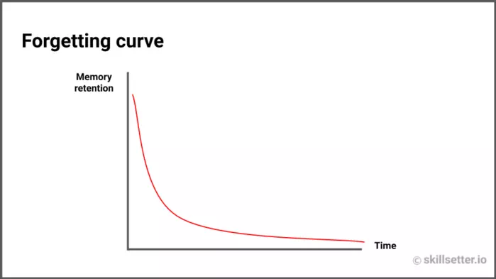

Привет! Меня зовут Влад Якупов. Я развиваю свой EdTech-стартап skillsetter. Сегодня хочу поделиться статьей о том, как научиться любому навыку просто и эффективно. Этот материал написал Денис Кульков, Head Of Content в skillsetter. Текст от его лица. Раньше я не любил учиться. Мне было сложно и скучно. Из-за этого я бросил десятки онлайн-курсов. И я не один такой: по статистике, 90% людей их не заканчивают. Однажды я решил выучить Python и начал проходить курс на Stepik. Сначала все шло отлично: я смотрел видео, мне было интересно и понятно. Но потом пришло время сделать проект. В этот момент я осознал, что не понимаю, что от меня требуется. Я не мог понять, что написано в условии задания. Как будто бы я и не смотрел все эти лекции. Курс я так и не прошел до конца. Потом я сам стал частью EdTech. Сначала в Maximum Education, а теперь в skillsetter. Я на практике узнал, как учить других. В этой статье я собрал все, что знаю об эффективном обучении. Получилось 16 советов, которые помогут учиться правильно и доводить все до конца. Они помогли мне закончить брошенный курс. Чтобы тебе было проще ориентироваться в статье, я разделил эти советы на четыре группы:
- Как заставить свою память работать.Рассказываю о принципах работы мозга и памяти, которые влияют на запоминание. О кривой забывания (я ее ненавижу) и сфокусированном состоянии мозга.
- Как ставить цели и мотивировать себя.Здесь про backwards planning и другие способы не сбиваться с пути.
- Как управлять своим временем.Хаки про дедлайны и быстрое чтение учебников.
- Как делать сложное простым.Как максимизировать пользу от любого обучения.
Как заставить свою память работать
-
1 Чередуй занятия и сон
У мозга бывает два состояния: сфокусированный (focused) и рассеянный (diffused). Читая этот текст, ты находишься в сфокусированном состоянии. Через пару часов, когда ты будешь отдыхать, твой мозг будет в рассеянном состоянии. Именно в этот момент в твоем мозге начнут формироваться новые нейронные связи. Потом новые знания в сфокусированном режиме и формирование нейронных связей в рассеянном. И так всю жизнь. С тем, как работают два состояния мозга, мы знакомы еще со школы. Но не с уроков биологии, а с уроков литературы. Вспомни, как тяжело было идеально рассказать стихотворение в день, когда оно училось. Ты его учишь-учишь, а оно никак не выучивается. Но на следующее утро ты помнишь его идеально. Почему так? Когда мы учим стихотворение, мы находимся в сфокусированном режиме. А вот реальное запоминание происходит позже — во сне. Поэтому модель «учеба → сон → учеба” намного эффективнее, чем просто “учеба → учеба → учеба». Спать полезно. -
2 Чередуй занятия и сон
У мозга бывает два состояния: сфокусированный (focused) и рассеянный (diffused). Читая этот текст, ты находишься в сфокусированном состоянии. Через пару часов, когда ты будешь отдыхать, твой мозг будет в рассеянном состоянии. Именно в этот момент в твоем мозге начнут формироваться новые нейронные связи. Потом новые знания в сфокусированном режиме и формирование нейронных связей в рассеянном. И так всю жизнь. С тем, как работают два состояния мозга, мы знакомы еще со школы. Но не с уроков биологии, а с уроков литературы. Вспомни, как тяжело было идеально рассказать стихотворение в день, когда оно училось. Ты его учишь-учишь, а оно никак не выучивается. Но на следующее утро ты помнишь его идеально. Почему так? Когда мы учим стихотворение, мы находимся в сфокусированном режиме. А вот реальное запоминание происходит позже — во сне. Поэтому модель «учеба → сон → учеба” намного эффективнее, чем просто “учеба → учеба → учеба». Спать полезно. -
3 Чередуй занятия и сон
У мозга бывает два состояния: сфокусированный (focused) и рассеянный (diffused). Читая этот текст, ты находишься в сфокусированном состоянии. Через пару часов, когда ты будешь отдыхать, твой мозг будет в рассеянном состоянии. Именно в этот момент в твоем мозге начнут формироваться новые нейронные связи. Потом новые знания в сфокусированном режиме и формирование нейронных связей в рассеянном. И так всю жизнь. С тем, как работают два состояния мозга, мы знакомы еще со школы. Но не с уроков биологии, а с уроков литературы. Вспомни, как тяжело было идеально рассказать стихотворение в день, когда оно училось. Ты его учишь-учишь, а оно никак не выучивается. Но на следующее утро ты помнишь его идеально. Почему так? Когда мы учим стихотворение, мы находимся в сфокусированном режиме. А вот реальное запоминание происходит позже — во сне. Поэтому модель «учеба → сон → учеба” намного эффективнее, чем просто “учеба → учеба → учеба». Спать полезно. -
4 Чередуй занятия и сон
У мозга бывает два состояния: сфокусированный (focused) и рассеянный (diffused). Читая этот текст, ты находишься в сфокусированном состоянии. Через пару часов, когда ты будешь отдыхать, твой мозг будет в рассеянном состоянии. Именно в этот момент в твоем мозге начнут формироваться новые нейронные связи. Потом новые знания в сфокусированном режиме и формирование нейронных связей в рассеянном. И так всю жизнь. С тем, как работают два состояния мозга, мы знакомы еще со школы. Но не с уроков биологии, а с уроков литературы. Вспомни, как тяжело было идеально рассказать стихотворение в день, когда оно училось. Ты его учишь-учишь, а оно никак не выучивается. Но на следующее утро ты помнишь его идеально. Почему так? Когда мы учим стихотворение, мы находимся в сфокусированном режиме. А вот реальное запоминание происходит позже — во сне. Поэтому модель «учеба → сон → учеба” намного эффективнее, чем просто “учеба → учеба → учеба». Спать полезно.
Как ставить цели и мотивировать себя
-
1 Чередуй занятия и сон
У мозга бывает два состояния: сфокусированный (focused) и рассеянный (diffused). Читая этот текст, ты находишься в сфокусированном состоянии. Через пару часов, когда ты будешь отдыхать, твой мозг будет в рассеянном состоянии. Именно в этот момент в твоем мозге начнут формироваться новые нейронные связи. Потом новые знания в сфокусированном режиме и формирование нейронных связей в рассеянном. И так всю жизнь. С тем, как работают два состояния мозга, мы знакомы еще со школы. Но не с уроков биологии, а с уроков литературы. Вспомни, как тяжело было идеально рассказать стихотворение в день, когда оно училось. Ты его учишь-учишь, а оно никак не выучивается. Но на следующее утро ты помнишь его идеально. Почему так? Когда мы учим стихотворение, мы находимся в сфокусированном режиме. А вот реальное запоминание происходит позже — во сне. Поэтому модель «учеба → сон → учеба” намного эффективнее, чем просто “учеба → учеба → учеба». Спать полезно. -
2 Чередуй занятия и сон
У мозга бывает два состояния: сфокусированный (focused) и рассеянный (diffused). Читая этот текст, ты находишься в сфокусированном состоянии. Через пару часов, когда ты будешь отдыхать, твой мозг будет в рассеянном состоянии. Именно в этот момент в твоем мозге начнут формироваться новые нейронные связи. Потом новые знания в сфокусированном режиме и формирование нейронных связей в рассеянном. И так всю жизнь. С тем, как работают два состояния мозга, мы знакомы еще со школы. Но не с уроков биологии, а с уроков литературы. Вспомни, как тяжело было идеально рассказать стихотворение в день, когда оно училось. Ты его учишь-учишь, а оно никак не выучивается. Но на следующее утро ты помнишь его идеально. Почему так? Когда мы учим стихотворение, мы находимся в сфокусированном режиме. А вот реальное запоминание происходит позже — во сне. Поэтому модель «учеба → сон → учеба” намного эффективнее, чем просто “учеба → учеба → учеба». Спать полезно. -
3 Чередуй занятия и сон
У мозга бывает два состояния: сфокусированный (focused) и рассеянный (diffused). Читая этот текст, ты находишься в сфокусированном состоянии. Через пару часов, когда ты будешь отдыхать, твой мозг будет в рассеянном состоянии. Именно в этот момент в твоем мозге начнут формироваться новые нейронные связи. Потом новые знания в сфокусированном режиме и формирование нейронных связей в рассеянном. И так всю жизнь. С тем, как работают два состояния мозга, мы знакомы еще со школы. Но не с уроков биологии, а с уроков литературы. Вспомни, как тяжело было идеально рассказать стихотворение в день, когда оно училось. Ты его учишь-учишь, а оно никак не выучивается. Но на следующее утро ты помнишь его идеально. Почему так? Когда мы учим стихотворение, мы находимся в сфокусированном режиме. А вот реальное запоминание происходит позже — во сне. Поэтому модель «учеба → сон → учеба” намного эффективнее, чем просто “учеба → учеба → учеба». Спать полезно. -
4 Чередуй занятия и сон
У мозга бывает два состояния: сфокусированный (focused) и рассеянный (diffused). Читая этот текст, ты находишься в сфокусированном состоянии. Через пару часов, когда ты будешь отдыхать, твой мозг будет в рассеянном состоянии. Именно в этот момент в твоем мозге начнут формироваться новые нейронные связи. Потом новые знания в сфокусированном режиме и формирование нейронных связей в рассеянном. И так всю жизнь. С тем, как работают два состояния мозга, мы знакомы еще со школы. Но не с уроков биологии, а с уроков литературы. Вспомни, как тяжело было идеально рассказать стихотворение в день, когда оно училось. Ты его учишь-учишь, а оно никак не выучивается. Но на следующее утро ты помнишь его идеально. Почему так? Когда мы учим стихотворение, мы находимся в сфокусированном режиме. А вот реальное запоминание происходит позже — во сне. Поэтому модель «учеба → сон → учеба” намного эффективнее, чем просто “учеба → учеба → учеба». Спать полезно.